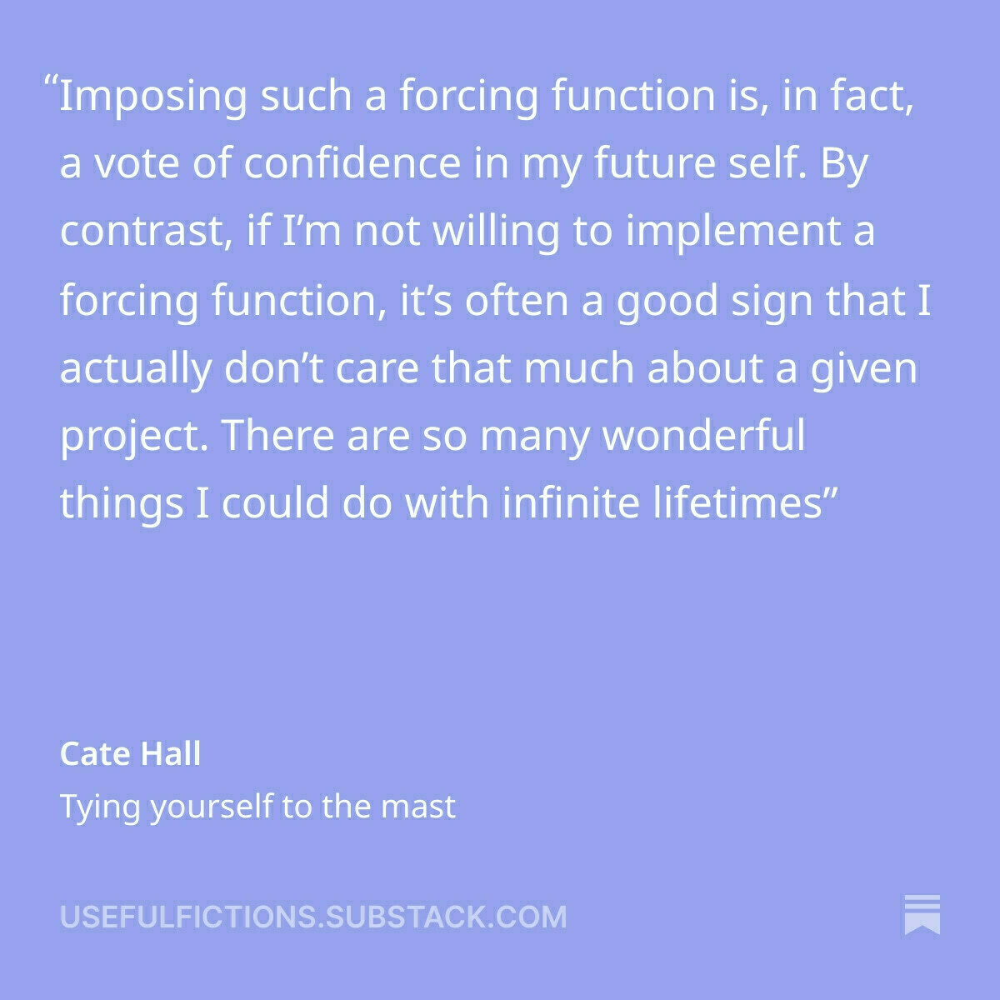

Life hack for coping with the loss of a pet
We recently had to say goodbye to our 19-and-a-half-year-old cat, Sherlock leaving us pet-less for the first time in nearly a decade. Losing a pet is hard. Living without pets—after years of their steady company—is hard in a different way. Jena and I think we’ve found a way to cushion the blow a bit.
We’ve shared this with friends before and usually get a mix of side-eye and blank stares. Still, it works for us. The “hack” only makes sense if you already talk to your pets—and they talk back—on a daily basis. Not everyone does, but I suspect more people than admit to it do.
In our house, our pets have always had distinct voices. They talk to us and to each other. Back in 2016, when both of our dogs died within three months, the silence was crushing. We realized that so much of our conversation wasn’t just about the dogs but with them—our narration of their imagined inner lives. Over the years those voices grew into full personalities, part real, part invention, but very much woven into the fabric of our life.
When the house went quiet, we eventually stumbled onto an odd but comforting solution: we just kept talking to them. We invented a sort of afterlife—even though neither of us really believes in one—and continued the conversations. When we later adopted two cats, they simply joined in.
Now, even as the house feels empty again, the conversations continue. Is it the same as having a cat on your lap or tossing a ball for a dog? No. But it keeps the connection alive, and that’s something I’m grateful not to lose.
I have a growing backlog of Cate Hall posts to read through over at Useful Fictions. Every time I open a post from her, I expect it to be somehow not as good as the last one I read—yet it consistently is. This recent post In praise of quitting is no exception.
Try it. Go around your day, narrating all of your choices to yourself. With everything you do, consciously say, in your head: “I am choosing to do this, because it’s the best course of action according to all the information I have available.” See if it feels true.
I’ve been enjoying reading Cate Hall’s Useful Fictions blog recently. Check it out.
Had to stop reading this republished list from Vulture of the all the Beatles songs ranked at the first song (#214). There is no way any song from Revolver is worse than anything from pre 1965. “She Loves You” at #4? GTFO!
Not a hot take but in an age with ChatGPT etc, Siri is less than worthless. Just usually a complete waste of time to interact with Apples’s pile of hot garbage.
The tricky art of making new friends later in life
@odonnellweb.com’s recent post about about needing new friends certainly struck a few chords. He and I have shared many life experience (getting married in early our 20’s, I work from home, we moved away from friends and family in 2017, my wife and I are best friends and we go out together regularly—even hiking and taking frequent trips in our camper). Jena and I never had children, but as Chris points out—and as I have suspected—many of those parents-of-my-kids-friendships aren’t especially durable.
I’ve been lucky to have had several really close friendships in my life, and further thankful that some of these friends are still close (even if not geographically). But I think these friendships are a double-edged sword when trying to make new (local) friends. They are the benchmarks to whom I compare all potential new friends. It is unrealistic that this works out favorably for them. I’ve had nearly 30 years to get know and be known by these guys. We’ve had thousands of shared experiences, coded language, and are at ease with each other in a way that people an be when they take for granted (in the good ways) that they will remain in each other’s lives no matter what happens. These friendships are built to last, span across multiple domains and interests, and can withstand disagreements and arguments.
In my current community, I encounter people who:
- Come from diverse backgrounds (i.e., not everyone grew up in Minnesota or works in software).
- Hold different political ideologies.
- Might already feel their friend groups are full.
- Don’t share a wide range of my interests.
Expecting two or more of these criteria to align perfectly is probably unrealistic—and perhaps not even desirable in all cases (especially points 1 and 2), even if alignment makes things easier initially.
I’m starting to believe that sharing just one or two interests with potential new friends is enough. Doing those shared activities—rafting, concerts, comedy shows, hiking, biking—can create genuine connections. Over time, these experiences can grow into friendships that don’t feel like work.
@jthingelstad’s Weekly Thing pointed me toward this topic with links to both O’Donnell’s post and Noah Smith’s post on How to have friends past age 30 which added more helpful perspectives.
A rocky start to construction
We’ve had crews out escavating quite a small site between our house and garage—preparing for a new building to be nestled in between them. We knew the first step was to remove the large boulder between the structures. What we didn’t know is that it would take the better part of two weeks to do so—AND that there would be two more, even larger, rocks, to contend with just below the surface.
We drived breaking them apart with a giant hammer but ultimatly we ended up drilling holes and filling them with expanding grout that actually breaks the rocks apart from the inside. Cool stuff. Disolves to (I’m sure, toxic) dust when done doing its work. The largest of the rocks will end up serving as a part of the foundation of those house as it is just below the lelve we need it to be. Onward!


Predictability and trust is key to American business, and it's disappearing quickly. a.wholelottanothing.org
The shrinking of Elon Musk (and our country's place in the world)
For people who I’ve spent time with, it won’t surprise you to know that I am a fan of Sam Harris. I owe a lot to the man—from a greater understanding of self and consciousness, to better reasoning skills, to my meditative practice. Sam, along with Tim Urban or Wait But Why fame, will get a bunch of mentions here. You have been warned.
I fell like I have to say something about our present time, but honestly, I am gripping so tight, and trying so hard not to get angry, depressed, despondent, that I can only pay so much attention. Sam is one of those people to whom I give my attention, even when hard.
This isn’t my long-form blog. Nor is it where I expect to discuss politics and society to a large extent. But I did figure I should leave this here. To document the great unraveling.

Breaking Ground and Making Space
Up at our little house on the mountain, we’re about to embark on a big undertaking: more than doubling the size of the house and connecting it to our currently detached garage.
There are a few reasons for this:
- We’d like to each have our own office. Right now, Jena and I swap in and out of the same small office/workout studio.
- We’d like to host more guests than just two people who want to share a small office/workout studio/guest room space
- We need more storage. With all the gear that comes with skiing (multiple kinds!), climbing, hiking, kayaking, paddleboarding, and camping, space is at a premium.
- At night, walking between the house and the garage means running a gauntlet of bears, coyotes, and—most worryingly—mountain lions. We’d rather not roll the dice on an encounter every evening.
I am sure the progress of this project will provide ample opportunity for sharing on this site.
Here are some “before” shots:


Sharing doesn't need to be stressful
There are 3 reasons why I find it so much easier to blog here than I do on my “main blog” alttext.com.
-
Somewhere along the line I determined that I had things to say, but those things needed vetting, research, thoughtfulness. Who’s got time for that?
-
I also created a sense of audience that I had to consider, to please. This is pretty dumb given my current subscriber count. Maybe back in the day when I was pulling thousands of uniques a month, but certainly not in 2025.
-
Much of the time I just want to jot down a quick thought and share it—without the “pressure” the two points above allude to. I had been trying to figure out how to get short form posts integrated into Alt Text (as some had done on Ghost CMS) but it as just outside the amount of time I wanted to spend.
With micro.blogging here on BenEdwards.org I am freed of these things. Plus, I can wax poetically (read: longer) and it still works. Also, no one (almost) is reading this so ¯\(ツ)/¯
Still. I am hopeful that writing here, exposes some more desires to research and write over on alttext.com again. Perhaps even at a greater clip than once a year.
I’m getting real close to descending into madness, rocking back and forth, mumbling “But her emails!”
This is why I have unsubscribed from society.
Blogging like it's 1999
I know I am only a few days into my micro.blog journey but the whole thing—from the tools to the community—feels very retro in the best possible ways. There are certainly things I have become accustomed to on other platforms—embeds/unfurling chief among them—but if I can relax and understand that many of those things don’t matter, I can find a lot to like here.
There is such a great community. Feels so insular and elite but in the best possible ways—like the early web did. Not like we are better than anyone, but that we found this secret place that is filled cool stuff. Like we are part of a community of people who care about the same core stuff but aren’t at all homogenous—we’re all bringing something to the table.

Combine this with the recent spirit of building that some AI tools have resurfaced in me, and I feel like I’m in a new renascence on the web. Excited.
Close to home
Since, this year (and maybe the next 4), I cannot really stomach looking outward onto the world, to my nation, sometimes even to my community, I am placing my attention upon my immediate surroundings. I’ll be undertaking (and sharing) some large and small projects around the house (in a category, I sorta tongue-in-cheek refer to as homesteading) as well as doing some hiking, reading, and undertaking some creative endeavors with AI and technology. I’ll outline each of these more thoroughly in future posts. Looking forward to it.
Love this from IKEA Australia (and, of course have loved Severance 📺 —but now begins the long wait for season 3)
So long 23andMe
After a nice breakfast of crepes (yeah, we fancy) with Jena downtown, the bulk of my morning has been spent downloading my 23andMe data. I am saddened by the recent news of them filing of bankruptcy but I’m not about to allow any new buyer to have my genomic data.
Hello, (micro) world.
Testing out posting from Obsidian. That would certainly streamline my blogging workflow.
Hoping this can be where alttext.com lives soon.